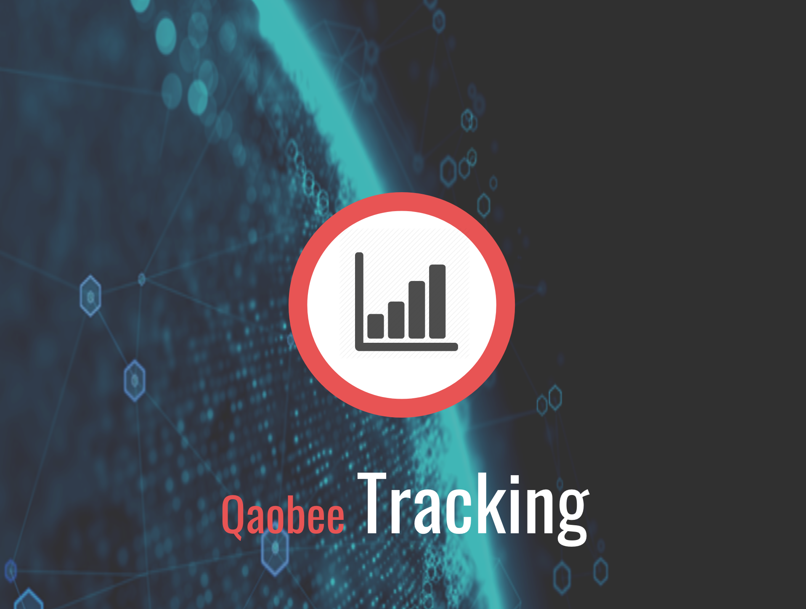

<!--
  Generated template for the MenuPage page.

  See http://ionicframework.com/docs/components/#navigation for more info on
  Ionic pages and navigation.
-->
<ion-header>

    <ion-navbar>
        <button ion-button menuToggle>
            <ion-icon name="menu"></ion-icon>
        </button>
        <ion-title>Hello {{ (user.firstname) ? user.firstname : user.account.login | uppercase}} !</ion-title> 
    </ion-navbar>

</ion-header>


<ion-content>
        <ion-row>
            <ion-col text-center>
                
            </ion-col>
        </ion-row>
    <next-event></next-event>
    <!-- <last-collect></last-collect> -->
</ion-content>

<ion-footer>
        <ion-row>
            <ion-col text-center>
                <button ion-button (tap)="goToEventList()" outline large>  
                    <ion-icon name="calendar"></ion-icon>
                </button>
            </ion-col>
            <ion-col text-center>
                <button ion-button (tap)="goToPlayerList()" outline large>  
                    <ion-icon name="people"></ion-icon>
                </button>
            </ion-col>
            <ion-col text-center>
                <button ion-button (tap)="goToCollectList()" outline large>  
                    <ion-icon name="stats"></ion-icon>
                </button>
            </ion-col>
        </ion-row>
</ion-footer>
